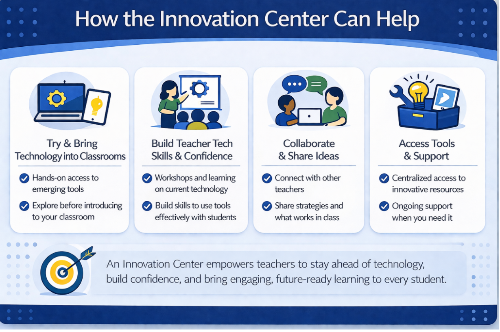
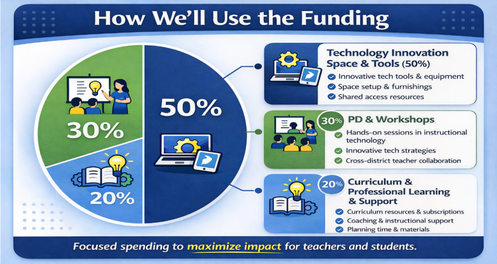

Technology in education is moving fast. New tools, new platforms, and new possibilities keep emerging, and most teachers are expected to figure it out on their own. Our district has devices, approved platforms, and a weekly email with AI tips, but no structured pathway for teachers to actually build skills and confidence with the tools they are being asked to use.
What Is Missing for Teachers
Since COVID, districts across the country have made real investments in student-facing technology, with many reaching a 1:1 device ratio. Within our district, there are established student-facing spaces, including an elementary innovation lab and a high school career and technical education center. These are meaningful investments, and they matter. What is missing is a space designed for teachers as learners.
A dedicated, hands-on environment where educators can come to explore, practice, and build the kind of confidence that actually changes what happens in classrooms. Approving a tool is not the same as equipping teachers to use it. The gap between allowing a platform and teachers integrating it thoughtfully and confidently is exactly the problem this space is designed to solve.
Research on teacher professional development is consistent on this point: one-time workshops and passive communications produce low adoption rates and minimal long-term change in practice. Sustained, hands-on, peer-supported learning is what shifts teacher practice over time (Amemasor et al., 2025). When teachers build genuine confidence with technology, that shift shows up in their classrooms and in student learning outcomes.
Introducing the Instructional Innovation Center
This proposal calls for repurposing an existing room at the district's central office into a teacher-facing professional learning lab. The space is designed for adults and built around what teachers actually need to develop real instructional technology skills.

(OpenAI, 2026)
Six Stations, One Purpose
The center is organized around six learning stations, each numbered and focused on a distinct professional learning need:
01 AI Exploration
Hands-on exploration of AI tools approved for classroom use, including district-approved platforms and emerging options.
02 Assistive Technology
Tools that support diverse learners, including text-to-speech, adaptive input, and accessibility features built into existing platforms.
03 Emerging Tech Demo Library
A rotating collection of new tools for teachers to explore before committing to classroom implementation.
04 Media Production Studio
Equipment and space to create instructional videos, podcasts, and digital content for classroom use.
05 Collaboration Zone
Flexible seating and shared screens for teacher teams to plan, co-create, and problem-solve together.
06 Resource Corner
Curated print and digital resources organized by content area, grade band, and instructional technology topic.
Getting Teachers in the Door
A space without people is just a room. The adoption model is built around three pathways that meet teachers where they are:
-
MyPassport Salary Credit
Teachers earn salary credit through structured Innovation Center learning experiences, building participation into existing professional growth systems.
-
Teacher Leader Cohort
A small cohort of teacher leaders receives deeper training and serves as building-level technology coaches and advocates.
-
Building Rotations (Year 2)
In the second year, whole teams rotate through the center as part of their professional development calendar, making access equitable across all schools.
Why This Investment Makes Sense
The proposal is not a request for additional devices. Every teacher already has a Chromebook since COVID. This investment is focused on providing tools and experiences that support educators in becoming confident, intentional users of technology.
Budget Overview: $47,626 of $60,000
Technology & Equipment$28,450
Programming & Professional Development$12,000
Furniture & Space Setup$5,176
Signage, Materials & Contingency$2,000

(OpenAI, 2026)
Programming and professional development represent the second largest budget category. This is intentional. Research is clear that physical spaces without dedicated programming become underutilized resources. The investment in ongoing learning is what makes the space sustainable (Freeman et al., 2014).
The challenge this proposal addresses is not unique to one district. Teachers across the country are being asked to integrate technology without the time, space, or support to do it well. The missing ingredient is rarely the technology itself.
Trending in Ed Tech
For anyone interested in where educational technology is heading in 2026, this K-12 Dive article is worth a read. It covers how districts are navigating AI tools, budget pressures, and student data privacy right now.
3 Trends That Will Shape Ed Tech in 2026, K-12 Dive, January 2026
References
Amemasor, S. K., Oppong, S. O., Ghansah, B., Benuwa, B.-B., & Essel, D. D. (2025). A systematic review on the impact of teacher professional development on digital instructional integration and teaching practices.
Frontiers in Education, 10, Article 1541031.
https://doi.org/10.3389/feduc.2025.1541031
Casanova, D., Huet, I., & Garcia, F. (2023). The experience of co-designing a learning space with teachers and students.
Education Sciences, 13(2), Article 103.
https://doi.org/10.3390/educsci13020103
Freeman, S., Eddy, S. L., McDonough, M., Smith, M. K., Okoroafor, N., Jordt, H., & Wenderoth, M. P. (2014). Active learning increases student performance in science, engineering, and mathematics.
Proceedings of the National Academy of Sciences, 111(23), 8410–8415.
https://doi.org/10.1073/pnas.1319030111
OpenAI. (2026). Artificial intelligence generated graphics used for instructional visuals.
Join the conversation
If you are an educator, what technology topics do you wish you had more time and space to explore? Share what is on your radar and what questions you are still sitting with.